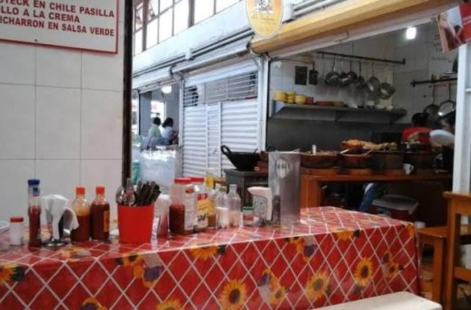
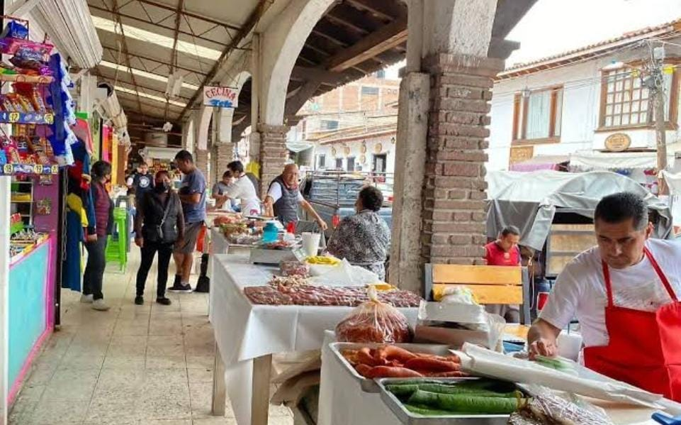
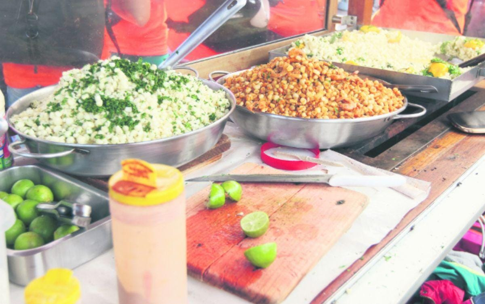

" Donde Valle sabe mas rico. "

El Mercado Municipal Miguel Hidalgo y Costilla es uno de los espacios comerciales más importantes de Valle de Bravo, Estado de México. Se caracteriza por ser un lugar donde los habitantes y visitantes pueden encontrar una gran variedad de productos, alimentos y artículos de uso cotidiano. Además, representa una parte importante de las actividades económicas y sociales del municipio.
Uno de sus principales atractivos es la venta de comida tradicional mexicana. En sus diferentes puestos y fondas se pueden encontrar alimentos preparados al momento, como quesadillas, tacos, tamales, barbacoa, cecina, sopas y diferentes antojitos. Estos platillos permiten disfrutar de sabores tradicionales en un ambiente familiar.
El mercado también cuenta con puestos dedicados a la venta de frutas y verduras frescas, donde se ofrecen productos de temporada utilizados para preparar diferentes platillos. Estos alimentos son importantes para la cocina tradicional y permiten que las familias encuentren ingredientes necesarios para su consumo diario.
Otro de los productos que se pueden encontrar son carnes, quesos, semillas, hierbas y diversos ingredientes utilizados en la gastronomía mexicana. La variedad de productos permite que los visitantes conozcan algunos de los alimentos que forman parte de las costumbres culinarias de Valle de Bravo y sus alrededores.
La gastronomía es uno de los aspectos que hacen especial a este mercado, ya que reúne diferentes sabores y preparaciones que forman parte de la cultura mexicana. Las fondas y puestos de comida ofrecen alternativas para desayunar, almorzar o disfrutar de algún antojito durante el recorrido por sus instalaciones.
El mercado es también un importante espacio de convivencia para los habitantes de Valle de Bravo. Diariamente recibe a familias, comerciantes y visitantes que acuden a realizar sus compras o consumir alimentos. Su ambiente refleja las actividades cotidianas y las tradiciones comerciales que se mantienen vivas en la comunidad.


Una de sus principales aportaciones es el apoyo a los pequeños comerciantes y negocios familiares, quienes ofrecen sus productos y servicios a la población. Gracias a estas actividades, el mercado contribuye al movimiento económico local y permite que diferentes familias obtengan ingresos mediante la venta de alimentos y mercancías.
Visitar el Mercado Municipal Miguel Hidalgo y Costilla también permite conocer una parte de la identidad cultural de Valle de Bravo. Sus productos, sabores y actividades comerciales muestran las costumbres de sus habitantes y la importancia que tienen los mercados tradicionales en la vida de las comunidades mexicanas.
Este lugar es una buena opción para quienes desean conocer la gastronomía y el comercio tradicional de Valle de Bravo. Además de encontrar diversos productos, los visitantes pueden disfrutar de alimentos preparados y observar la convivencia entre comerciantes y clientes. Por estas razones, el mercado forma parte de los espacios representativos de la vida cotidiana del municipio.